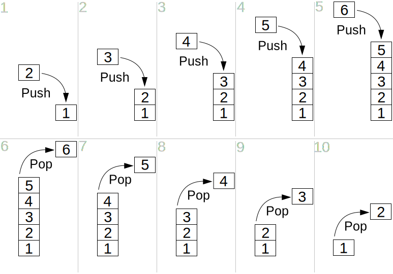

fn double(comptime num: u32) u32 {
return num * 2;
}
test "test comptime" {
_ = double(5678);
}12 Project 3 - Building a stack data structure
In this chapter we are going to implement a stack data structure as our next small project in this book. Implementing basic data structures in any language is kind of a “kindergarten task” (if this term even exist) in computer science (CS), because we normally learn and implement them in the first semesters of CS.
But this is actually good! Since this should be a very easy task, we don’t need much to explain what a stack is, then, we can concentrate on what is really important here, which is learning how the concept of “generics” are implemented in the Zig language, and how one of the key features of Zig, which is comptime, works, and use the stack data structure to demonstrate these concepts on the fly.
But before we get into building the stack data structure, we first need to understand what the comptime keyword does to your code, and after that, we also need to learn about how generics work in Zig.
12.1 Understanding comptime in Zig
One of the key features of Zig is comptime. This keyword introduces a whole new concept and paradigm, that is tightly connected with the compilation process. At Section 3.1.1 we described the importance and the role that “compile-time vs runtime” plays into Zig. At that section, we learned that the rules applied to a value/object change a lot depending on whether this value is known at compile-time, or just at runtime.
The comptime keyword is strongly related to these two spaces of time in the compilation process, i.e. the compile-time and the runtime. Let’s quickly recap the differences. Compile-time is the period of time when your Zig source code is being compiled by the zig compiler, while the runtime is the period of time when your Zig program is being executed, i.e. when we execute the binary files outputted by the zig compiler.
There are three ways in which you can apply the comptime keyword, which are:
- apply
comptimeon a function argument. - apply
comptimeon an object. - apply
comptimeon a block of expressions.
12.1.1 Applying over a function argument
When you apply the comptime on a function argument you are saying to the zig compiler that the value assigned to that particular argument of the function must be known at compile-time. We explained in details at Section 3.1.1 what exactly “value known at compile-time” means, so, in case you have doubts about this idea, comeback to that section.
Now let’s think about the consequences of this idea. First of all, we are imposing a limit, or, a requirement to that particular function argument. If the programmer accidentally tries to give a value to this function argument that is not known at compile time, the zig compiler will notice this problem, and as a consequence, it will raise a compilation error saying that it cannot compile your program. Because you are providing a value that is “runtime known” to a function argument that must be “compile-time known”.
Take a look at this very simple example below, where we define a double() function, that simply doubles the input value named num. Notice that, we use the comptime keyword before the name of the function argument. This keyword is marking the function argument num as a “comptime argument”.
That is a function argument whose value must be compile-time known. This is why the expression double(5678) is valid, and no compilation errors are raised. Because the value 5678 is compile-time known, so this is the expected behaviour for this function.
But what if we provide a number that is not compile-time known to this function? For example, we might provide a different input value to this function depending on the target OS of our compilation process. The code example delow demonstrates such case.
Because the value of the object n is determined at runtime, we cannot provide this object as input to the double() function. The zig compiler will not allow it, because we marked the num argument as a “comptime argument”. That is why the zig compiler raises the compile-time error exposed below:
const builtin = @import("builtin");
fn double(comptime num: u32) u32 {
return num * 2;
}
test "test comptime" {
var n: u32 = undefined;
if (builtin.target.os.tag == .windows) {
n = 1234;
} else {
n = 5678;
}
_ = double(n);
}t.zig:12:16: error: runtime-known argument passed to comptime parameter Comptime arguments are frequently used on functions that return some sort of generic structure. In fact, comptime is the essence (or the basis) to make generics in Zig. We are going to talk more about generics at Section 12.2.
For now, let’s take a look at this code example from Seguin (2024). You can see that this IntArray() function have one argument named length. This argument is marked as comptime, and receives a value of type usize as input. So the value given to this argument must be compile-time known. We can also see that this function returns an array of i64 values as output.
fn IntArray(comptime length: usize) type {
return [length]i64;
}Now, the key component of this function is the length argument. This argument is used to determine the size of the array that is produced by the function. Let’s think about the consequences of that. If the size of the array is dependent on the value assigned to the length argument, this means that the data type of the output of the function depends on the value of this length argument.
Let this statement sink for a bit in your mind. As I described at Section 1.2.2, Zig is a strongly-typed language, specially on function declarations. So every time we write a function in Zig, we have to annotate the data type of the value returned by the function. But how can we do that, if this data type depends on the value given to the argument of the function?
Think about this for a second. If length is equal to 3 for example, then, the return type of the function is [3]i64. But if length is equal to 40, then, the return type becomes [40]i64. At this point the zig compiler would be confused, and raise a compilation error, saying something like this:
Hey! You have annotated that this function should return a
[3]i64value, but I got a[40]i64value instead! This doesn’t look right!
So how can you solve this problem? How do we overcome this barrier? This is when the type keyword comes in. This type keyword is basically saying to the zig compiler that this function will return some type, but it doesn’t know yet what exactly type that is. We will talk more about this at Section 12.2.
12.1.2 Applying over an expression
When you apply the comptime keyword over an expression, then, it is garanteed that the zig compiler will execute this expression at compile-time. If for some reason, this expression cannot be executed at compile-time (e.g. for example, maybe this expression depends on a value that is only known at runtime), then, the zig compiler will raise a compilation error.
Take this example from the official documentation of Zig (Zig Software Foundation 2024). We are executing the same fibonacci() function both at runtime, and, at compile-time. The function is by default executed at runtime, but because we use the comptime keyword at the second “try expression”, this expression is executed at compile-time.
This might be a bit confusing for some people. Yes! When I say that this expression is executed at compile-time, I mean that this expression is compiled and executed while the zig compiler is compiling your Zig source code.
If you think hard enough about how the C and C++ macros work, you can reach the conclusion that they are also executed at compile-time. Because C and C++ macros are just simple text replacements operations, that are performed at compile-time to form the final version of the C or C++ source code that get’s sent to the compiler.
const expect = @import("std").testing.expect;
fn fibonacci(index: u32) u32 {
if (index < 2) return index;
return fibonacci(index - 1) + fibonacci(index - 2);
}
test "fibonacci" {
// test fibonacci at run-time
try expect(fibonacci(7) == 13);
// test fibonacci at compile-time
try comptime expect(fibonacci(7) == 13);
}A lot of your Zig source code might be potentially executed at compile-time, because the zig compiler can figure it out the result value of some types of expressions. Specially if these expressions involves only compile-time known values. We have talked about this at Section 3.1.1.
But when you use the comptime keyword on an expression, there is no “it might be executed at compile-time” anymore. With the comptime keyword you are ordering the zig compiler to execute this expression at compile-time. You are imposing this rule, it is garanteed that the compiler will always execute it at compile-time. Or it at least, the compiler will try to execute it. If the compiler cannot execute the expression for whatever reason, the compiler will raise a compilation error.
12.1.3 Applying over a block
Blocks were described at Section 1.7. When you apply the comptime keyword over a block of expressions, you get essentially the same effect when you apply this keyword to a single expression. That is, the entire block of expressions is executed at compile-time by the zig compiler.
In the example below, we mark the block labeled of blk as a comptime block, and, therefore, the expressions inside this block are executed at compile-time.
const expect = @import("std").testing.expect;
fn fibonacci(index: u32) u32 {
if (index < 2) return index;
return fibonacci(index - 1) + fibonacci(index - 2);
}
test "fibonacci in a block" {
const x = comptime blk: {
const n1 = 5;
const n2 = 2;
const n3 = n1 + n2;
try expect(fibonacci(n3) == 13);
break :blk n3;
};
_ = x;
}12.2 Introducing Generics
First of all, what is a generic? Generic is the idea to allow a type (f64, u8, u32, bool, and also, user-defined types, like the User struct that we defined at Section 2.3) to be a parameter to methods, classes and interfaces (Geeks for Geeks 2024). In other words, a “generic” is a class (or a method) that can work with multiple data types.
For example, in Java, generics are created through the operator <>. With this operator, a Java class is capable of receiving a data type as input, and therefore, the class can fit it’s features according to this input data type. As another example, generics in C++ are supported through the concept of templates. Class templates in C++ are generics.
In Zig, generics are implemented through comptime. The comptime keyword allows us to collect a data type at compile time, and pass this data type as input to a piece of code.
12.2.1 A generic function
Take the max() function exposed below as a first example. This function is essentially a “generic function”. In this function, we have a comptime function argument named T. Notice that this T argument have a data type of type. Weird right? This type keyword is the “father of all types”, or, “the type of types” in Zig. Because we used this type keyword in the T argument, we are telling the zig compiler that this T argument will receive some data type as input.
Also notice the use of the comptime keyword in this argument. As I described at Section 12.1, every time you use this keyword in a function argument, this means that the value of this argument must be known at compile-time. This makes sense, right? Because there is no data type that you can make that is known only at runtime.
Think about this. Every data type that you will ever write is always known at compile-time. Specially because data types are an essential information for the compiler to actually compile your source code. Having this in mind, makes sense to mark this argument as a comptime argument.
fn max(comptime T: type, a: T, b: T) T {
return if (a > b) a else b;
}Also notice that the value of the T argument is actually used to define the data type of the other arguments of the function, a and b, and also at the return type annotation of the function. That is, the data type of these arguments (a and b), and, the return data type of the function itself, are determined by the input value given to the T argument.
As a result, we have a generic function that works with different data types. For example, I can provide u8 values to this max() function, and it will work as expected. But if I provide f64 values instead, it will also work as expected. If I did not use a generic function, I would have to write a max() for each one of the data types that I wanted to use. This generic function provides a very useful shortcut for us.
const std = @import("std");
fn max(comptime T: type, a: T, b: T) T {
return if (a > b) a else b;
}
test "test max" {
const n1 = max(u8, 4, 10);
std.debug.print("Max n1: {d}\n", .{n1});
const n2 = max(f64, 89.24, 64.001);
std.debug.print("Max n2: {d}\n", .{n2});
}Max n1: 10
Max n2: 89.2412.2.2 A generic data structure
Every data structure that you find in the Zig Standard Library (e.g. ArrayList, HashMap, etc.) is essentially a generic data structure. These data structures are generic in the sense that they work with any data type you want. You just say which is the data type of the values that are going to be stored in this data structure, and they just work as expected.
A generic data structure in Zig is the way to replicate a generic class from Java, or, a class template from C++. But you may quest yourself: how do we build a generic data structure in Zig?
The basic idea is to write a generic function that creates the data structure definition for the specific type we want. In other words, this generic function behaves as a “constructor”. The function outputs the struct definition that defines this data structure for a specific data type.
To create such function, we need to add a comptime argument to this function that receives a data type as input. We already learned how to do this at the previous section (Section 12.2.1).
I think the best way to demonstrate how to create a generic data structure is to actually write one. This where we go to our next small project in this book. This one is a very small project, which is to write a stack data structure.
12.3 What is a stack?
A stack data structure is a structure that follows a LIFO (last in first out) principle. Only two operations are normally supported in a stack data structure, which are push and pop. The push operation is used to add new values to the stack, while pop is used to remove values from the stack.
When people try to explain how the stack data structure works, the most common analogy that people use is a stack of plates. Imagine that you have a stack of plates, for example, a stack of 10 plates in your table. Each plate represents a value that is currently stored in this stack.
Currently we have a stack with 10 different values, or 10 different plates. Now, imagine that you want to add a new plate (or a new value) to this stack, which translates to the push operation. You would add this plate (or this value) by just putting the new plate on the top of the stack. Then, you would increase the stack to 11 plates.
But how would you remove plates (or remove values) from this stack (a.k.a. the pop operation) ? To do that, we would have to remove the plate on the top of the stack, and, as a result, we would have, once again, 10 plates in the stack.
This demonstrates the LIFO concept, because the first plate in the stack, which is the plate in the bottom of the stack is the last plate to get out of the stack. Think about it. In order to remove this specific plate from the stack, we have to remove all plates in the stack. So every operation in the stack, either insertion or deletion, is always made at the top of the stack. The Figure 12.1 below exposes this logic visually:

12.4 Writing the stack data structure
We are going to write the stack data structure in two steps. First, we are going to implement a stack that can only store u32 values. Then, after that, we are going to extend our implementation to make it generic, so that it works with any data type we want.
First, we need to decide how the values will be stored inside the stack. There are multiple ways to implement the storage behind a stack structure. Some people prefer to use a doubly linked list, some others prefer to use a dynamic array, etc. In this example we are going to use an array behind the hood, to store the values in the stack, which is the items data member of our Stack struct definition.
Also notice in our Stack struct that we have three other data members: capacity, length and allocator. The capacity member contains the capacity of the underlying array that stores the values in the stack. The length contains the number of values that are currently being stored in the stack. And the allocator contains the allocator object which will be used by the stack structure whenever it needs to allocate more space for the values that are being stored.
We begin by defining an init() method of this struct, which is going to be responsible for instantiating a Stack object. Notice that, inside this init() method, we start by allocating an array with the capacity specified in the capacity argument. Then, we use the built-in function @memset() to set all elements of this new array that we have allocated to zero.
In other words, this @memset() function is basically equivalent to the memset() function from C Standard Library1. In this example, we are using this function to essentially assign the value 0 to all elements of this array. We do that to initialize this memory that was allocated. Uninitialized memory is a commom source of undefined behaviour, so, this step is made for safety reasons.
const std = @import("std");
const Allocator = std.mem.Allocator;
const Stack = struct {
items: []u32,
capacity: usize,
length: usize,
allocator: Allocator,
pub fn init(allocator: Allocator, capacity: usize) !Stack {
var buf = try allocator.alloc(u32, capacity);
@memset(buf[0..], 0);
return .{
.items = buf[0..],
.capacity = capacity,
.length = 0,
.allocator = allocator,
};
}
};12.4.1 Implementing the push operation
Now that we have written the basic logic to create a new Stack object, we can start writing the logic responsible for performing a push operation. Remember, a push operation in a stack data structure is the operation responsible for adding a new value to the stack.
So how can we add a new value to the Stack object that we have? The push() function exposed below is an answer to this question. Remember from what we discussed at Section 12.3 that values are always added to the top of the stack. This means that this push() function must always find the element in the underlying array of the stack, that currently represents the top position of the stack, and add this value there.
First, we have an if statement in this function. This if statement is checking whether we need to expand the underlying array to store this new value that we are adding to the stack. In other words, maybe the underlying array does not have enough capacity to store this new value, and, in this case, we need to expand our array to get the capacity that we need.
So, if the logic test in this if statement returns true, it means that the array does not have enough capacity, and we need to expand it before we store this new value. So inside this if statement we are executing the necessary expressions to expand the underlying array.
Notice that we use the allocator object to allocate a new array that is twice as bigger than the current array (self.capacity * 2). Then, we use memset() once again to set all fields in this array to zero, making sure that all memory is properly initialized.
After that, we use a different built-in function named @memcpy(). This built-in function is equivalent to the memcpy() function from the C Standard Library2. It is used to copy the values from one block of memory to another block of memory. In other words, you can use this function to copy the values from one array into another array.
We are using this @memcpy() built-in function to copy the values that are currently in the underlying array of the stack object (self.items) into our new and bigger array that we have allocated (new_buf). After we execute this function, the new_buf contains a copy of the values that are present at self.items.
Now that we have secured a copy of our current values in the new_buf object, we can now free the memory currently allocated at self.items. After that, we just need to assign our new and bigger array to self.items. This is the sequence of steps necessary to expand our array.
pub fn push(self: *Stack, val: u32) !void {
if ((self.length + 1) > self.capacity) {
var new_buf = try self.allocator.alloc(
u32, self.capacity * 2
);
@memset(new_buf[0..], 0);
@memcpy(
new_buf[0..self.capacity], self.items
);
self.allocator.free(self.items);
self.items = new_buf;
}
self.items[self.length] = val;
self.length += 1;
}After we make sure that we have enough room to store this new value that we are adding to the stack, all we have to do is to assign this value to the top element in this stack, and, increase the value of the length attribute by one. We find the top element in the stack by using the length attribute.
12.4.2 Implementing the pop operation
Now, we can implement the pop operation of our stack object. This is a much easier operation to implement, and the pop method below summarises all the logic that is needed.
We just have to find the element in the underlying array that currently represents the top of the stack, and set this element to zero, to indicate that this element is “empty”. After that, we also need to decrease the length attribute of the stack by one.
If the current length of the stack is zero, it means that there is no values being stored in the stack currently. So, in this case, we could just return from the function and do nothing really. This is what the if statement inside this function is checking for.
pub fn pop(self: *Stack) void {
if (self.length == 0) return;
self.items[self.length - 1] = 0;
self.length -= 1;
}12.4.3 Implementing the deinit method
We have implemented the methods responsible for the two main operations associated with the stack data structure, which is pop() and push(), and we also have implemented the method responsible for instantiating a new Stack object, which is the init() method.
But now, we need to implement also the method responsible for destroying a Stack object. In Zig, this task is commonly associated with the method named deinit(). Most struct objects in Zig have such method, and it is commonly nicknamed of “the destructor method”.
In theory, all we have to do to destroy the Stack object is to make sure that we free the allocated memory for the underlying array, using the allocator object that is stored inside the Stack object. This is what the deinit() method below is doing.
pub fn deinit(self: *Stack) void {
self.allocator.free(self.items);
}12.5 Making it generic
Now that we have implemented the basic skeleton of our stack data structure, we can now focus on discussing how can we make it generic. How can we make this basic skeleton to work not only with u32 values, but also, with any other data type we want? For example, we might need to create a stack object to store User values in it. How can we make this possible? The answer lies on the use of generics and comptime.
As I described at Section 12.2.2, the basic idea is to write a generic function that returns as result a struct definition as output. In theory, we do not need much to transform our Stack struct into a generic data structure. All that we need to do, to make our Stack struct generic, is to transform the underlying array in the stack structure into a generic array.
In other words, this underlying array needs to be a “chameleon”. It needs to adapt, and transform it into an array of the data type that we give it to. For example, if we need to create a stack that will store u8 values, then, this underlying array needs to be a u8 array (i.e. []u8). But if we need to store User values instead, then, this array needs to be a User array (i.e. []User). Etc.
We do that by using a generic function. Because a generic function can receive a data type as input, and we can pass this data type to the struct definition of our Stack object. Therefore, we can use the generic function to create a Stack object that can store the data type we want. If we want to create a stack structure that stores User values, we pass the User data type to this generic function, and it will create for us the struct definition that describes a Stack object that can store User values in it.
Take the code example below as an example. I truncated some parts of the Stack struct for brevity reasons. But if a specific part of our Stack struct is not exposed here in this example, is because this part did not changed from the previous example. It remains the same.
fn Stack(comptime T: type) type {
return struct {
items: []T,
capacity: usize,
length: usize,
allocator: Allocator,
const Self = @This();
pub fn init(allocator: Allocator, capacity: usize) !Stack(T) {
var buf = try allocator.alloc(T, capacity);
@memset(buf[0..], 0);
return .{
.items = buf[0..],
.capacity = capacity,
.length = 0,
.allocator = allocator,
};
}
pub fn push(self: *Self, val: T) !void {
// Truncate the rest of the struct
};
}Notice that we have created a function in this example named Stack(). This function takes a type as input, and passes this type to the struct definition of our Stack object. The data member items is now, an array of type T, which is the data type that we passed as input to the function. The function argument val in the push() function is now a value of type T too.
Now we have finally a stack data structure that is generic. I mean, we probably still need to adjust the @memset() calls, to trully make it generic for any data type. But this version is good enough, and it really works well with any of the primitive data types of Zig.
We can just provide a data type to this function, and it will create a definition of a Stack object that can store values of the data type that we provided. In the example below, we are creating the definition of a Stack object that can store u8 values in it. This definition is stored at the Stacku8 object. This Stacku8 object becomes our new struct, it is the struct that we are going to use to create our Stack object.
var gpa = std.heap.GeneralPurposeAllocator(.{}){};
const allocator = gpa.allocator();
const Stacku8 = Stack(u8);
var stack = try Stacku8.init(allocator, 10);
defer stack.deinit();
try stack.push(1);
try stack.push(2);
try stack.push(3);
try stack.push(4);
try stack.push(5);
try stack.push(6);
std.debug.print("Stack len: {d}\n", .{stack.length});
std.debug.print("Stack capacity: {d}\n", .{stack.capacity});
stack.pop();
std.debug.print("Stack len: {d}\n", .{stack.length});
stack.pop();
std.debug.print("Stack len: {d}\n", .{stack.length});
std.debug.print("Stack state: {any}\n", .{stack.items});Stack len: 6
Stack capacity: 10
Stack len: 5
Stack len: 4
Stack state: { 1, 2, 3, 4, 0, 0, 0, 0, 0, 0 }Every generic data structure in the Zig Standard Library (ArrayList, HashMap, SinlyLinkedList, etc.) is implemented through this logic, of using a generic function to create the struct definition that can work with the data type that you provided as input.
12.6 Conclusion
The full source code of the stack structure discussed in this chapter is freely available at the official repository for this book. Just checkout the stack.zig3 for the u32 version of our stack, and the generic_stack.zig4 for the generic version, available inside the ZigExamples folder of the repository.
https://www.tutorialspoint.com/c_standard_library/c_function_memset.htm↩︎
https://www.tutorialspoint.com/c_standard_library/c_function_memcpy.htm↩︎
https://github.com/pedropark99/zig-book/tree/main/ZigExamples/data-structures/stack.zig↩︎
https://github.com/pedropark99/zig-book/tree/main/ZigExamples/data-structures/generic_stack.zig↩︎